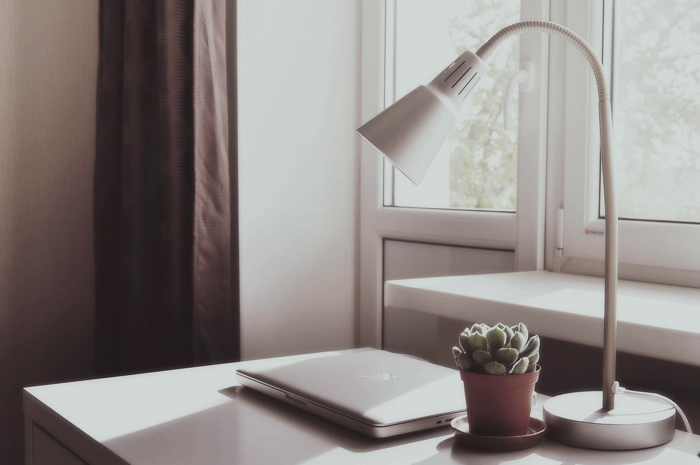
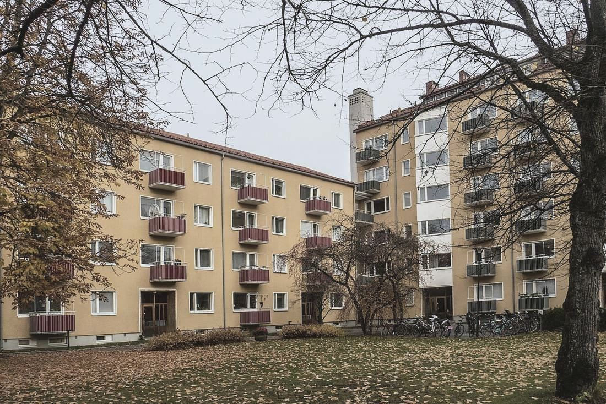

Studio Utu Oy, perustettu 2019
Kaksi sisustusarkkitehtia ja yksi hankinta-assistentti
Toimisto on Turun Port Arthurissa. Teemme noin 15 suunnitelmaa vuodessa, enimmäkseen koteihin.

Tarina
Aino Kuusela ja Tuomas Raunio tapasivat opiskeluaikana ja työskentelivät sen jälkeen eri toimistoissa: Aino Tampereella ja Tuomas Helsingissä. Vuonna 2019 he palasivat Turkuun ja perustivat Studio Utun.
Ensimmäinen toimisto oli entinen parturi Port Arthurissa. Ensimmäisen vuoden aikana ovelle tuli silloin tällöin asiakkaita, jotka halusivat leikkausajan. Heidät ohjattiin kulman kahvilaan. Yksi heistä tilasi myöhemmin olohuoneensa suunnitelman.
Vuosina 2019–2026 olemme tehneet yli 90 suunnitelmaa. Suurin osa on koteja, ja loput pieniä liiketiloja ja kesähuviloita.
Ihmiset
Kirjoita suoraan sille, joka vastaa kohteestasi. Muuten viesti menee studion yhteiseen osoitteeseen.
-
Aino Kuusela
Sisustusarkkitehti SIO, perustaja
Vastaa kodeista. Työskenteli ennen Utua tamperelaisessa toimistossa kuusi vuotta.
-
Tuomas Raunio
Sisustusarkkitehti SIO, perustaja
Vastaa kesähuviloista, liiketiloista ja kiintokalusteiden piirustuksista. Piirtää ensimmäisen luonnoksen aina käsin.
-
Elina Salo
Hankinta-assistentti, osa-aikainen
Hoitaa tilaukset, toimitukset ja materiaalinäytteet kolmena päivänä viikossa. Aloitti elokuussa 2026.
Tapa tehdä työtä
Omat kohteet alusta loppuun
Aino tai Tuomas vastaa kohteesta ensimmäisestä käynnistä luovutukseen. Sama ihminen tapaa sinut kaikissa vaiheissa.
Piirrämme mittakaavassa
Huonesuunnitelmat piirretään mittakaavassa 1:50 ja kiintokalusteet mittakaavassa 1:10, jotta puuseppä voi tehdä ne suoraan piirustuksesta.
Ei provisioita
Emme ota provisioita kalustemyyjiltä. Suosituksemme perustuvat siihen, mikä sopii kotiisi ja budjettiisi.
Noin 15 suunnitelmaa vuodessa
Otamme vuodessa vain niin monta kohdetta, että ehdimme käydä jokaisella työmaalla.

Toimisto Port Arthurissa
Studio Utu Oy, Utukatu 5, 20100 Turku. Toimistolla ei ole vastaanottoa, joten käynnit sovitaan etukäteen. Suurin osa tapaamisista on asiakkaan luona.
Yhteystiedot